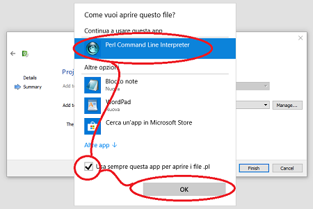

Per aggiungere una nuova pagina vuota su cui iniziare a lavorare inserendo i vari componenti dell'interfaccia che si vuole creare, procedere come segue:
Passare in modalità “Edit” (colonna di sinistra);
Selezionare il nome del proprio progetto (in alto) con il tasto destro del mouse;
Selezionare “Add New”;
Premere “Choose”;
Scegliere il nome della pagina e premere “Next”;
NOTA: Ricordarsi che la pagina dovrà chiamarsi page<numero di pagina> (page101).

Con Win10 potrebbe apparire questa finestra. Utilizzare sempre la app: Perl Command Line Interpreter.
Ripartire dall'inizio per creare la pagina.

Alla schermata “Project Management” cliccare su “finish”;

Dare conferma alla richiesta di poter sovrascrivere i file “pages.cpp” e “pages.h”.

Dalla seconda pagina in avanti si dovrà dare conferma (premendo “yes to all”) alla richiesta di ricaricare i file “pages.cpp” e “pages.h”.
Per aprire una pagina creata fare doppio click sul file corrispondente nel ramo “Forms” del progetto.